ArXiv 2025
RLFR: Extending Reinforcement Learning for LLMs with Flow Environment
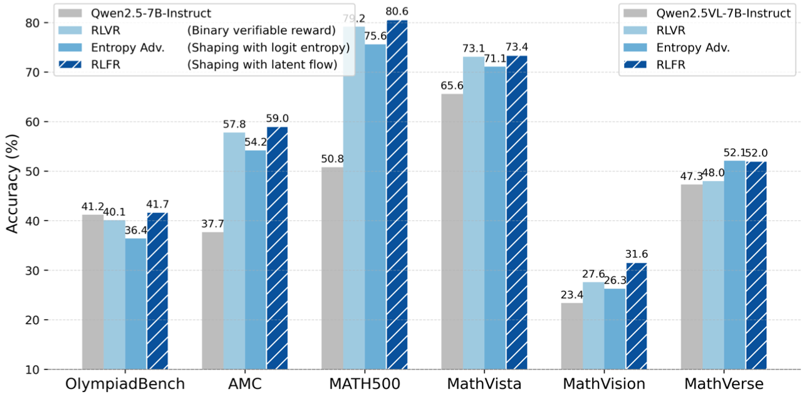
About
My name is Jinghao Zhang (张景皓). I am now a Ph.D. student in University of Science and Technology of China & Shanghai Innovation Institute, advised by Prof. Feng Zhao, and co-advised by Jiaqi Wang. My current research interests include LLM post-training and reinforcement learning. And previously,
I worked in computer vision, especially generative models and low-level vision tasks. I obtained my Bachelor degree from the School of Electronic Engineering at XiDian University in 2021, advised by Prof. Zhekun Zheng.
Selected
ArXiv 2025

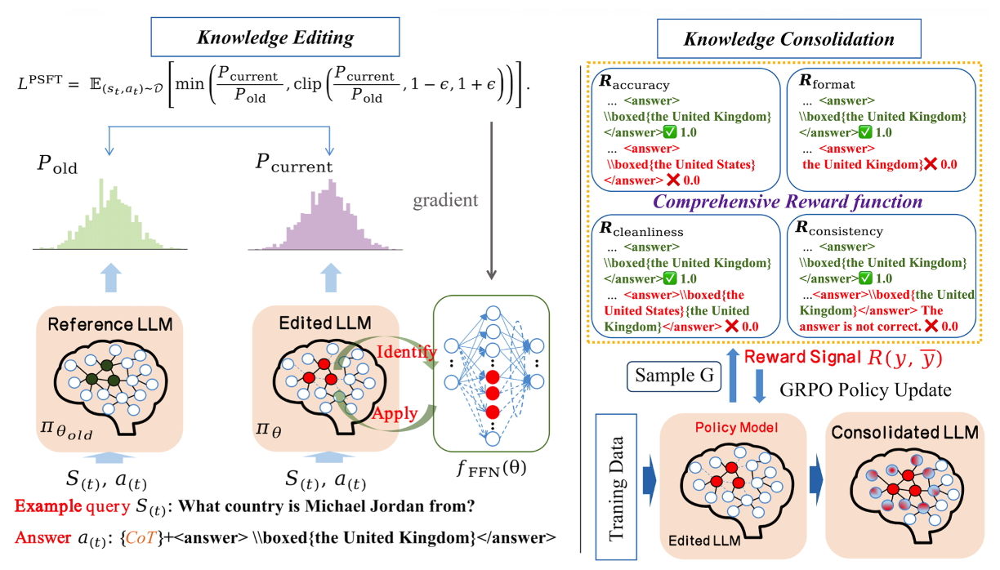
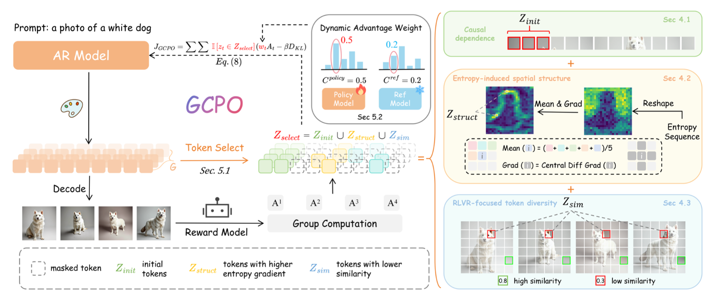
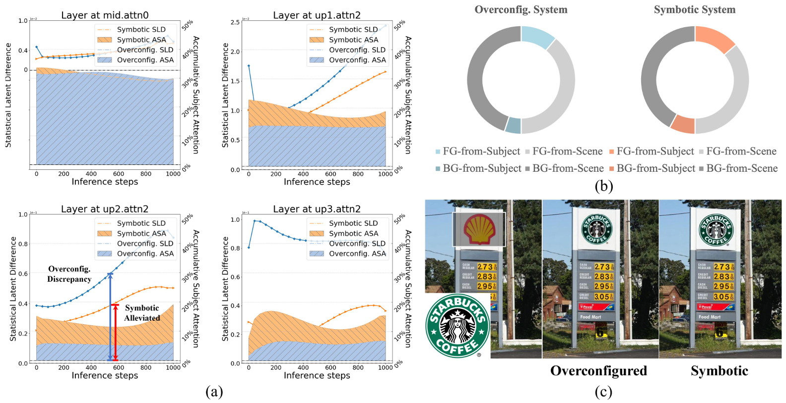
ECCV 2024
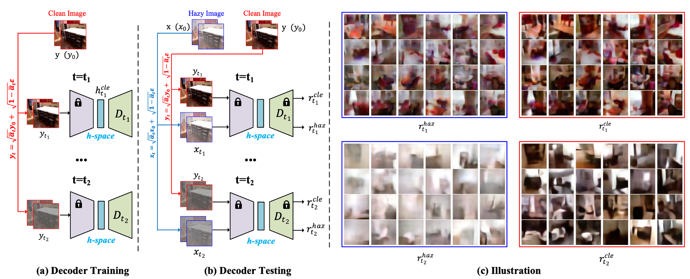
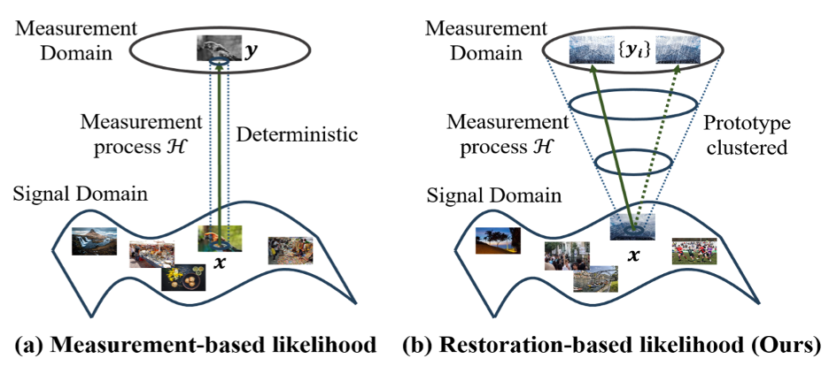
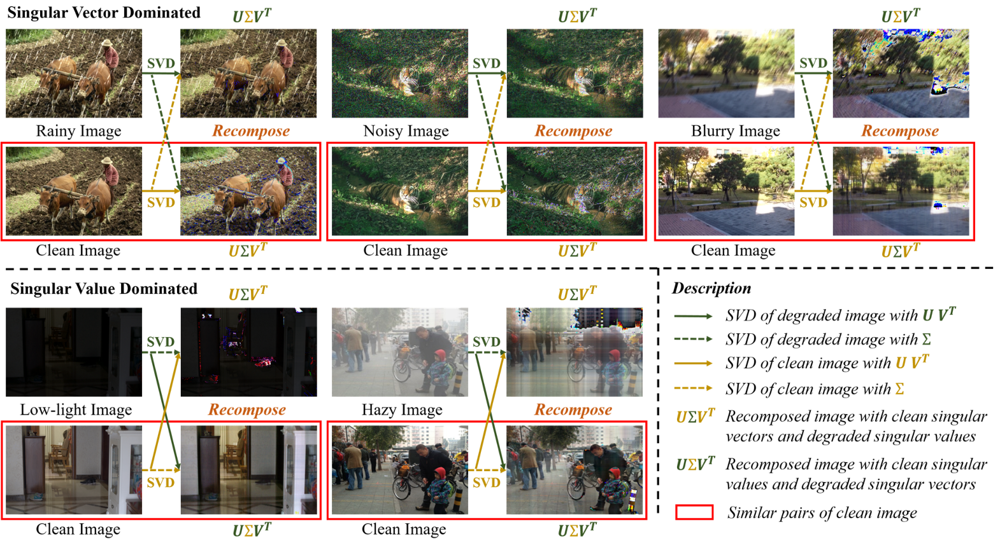
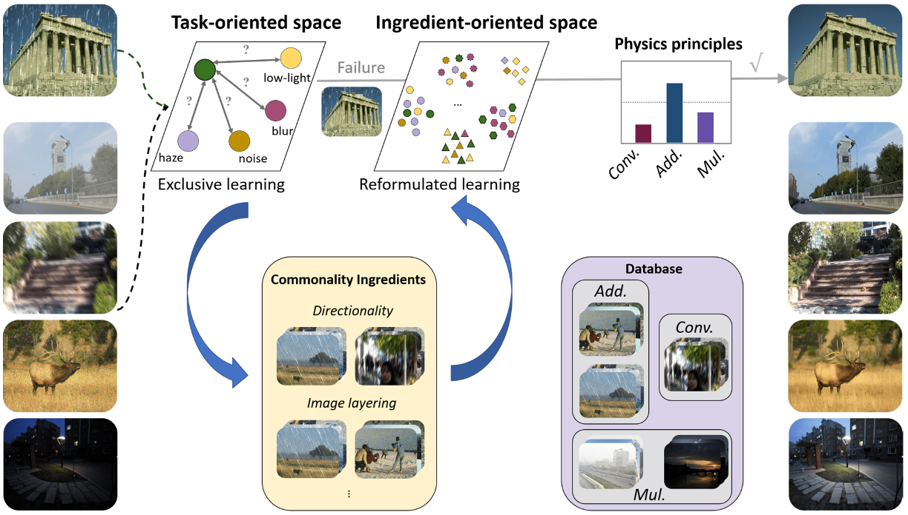
CVPR 2023
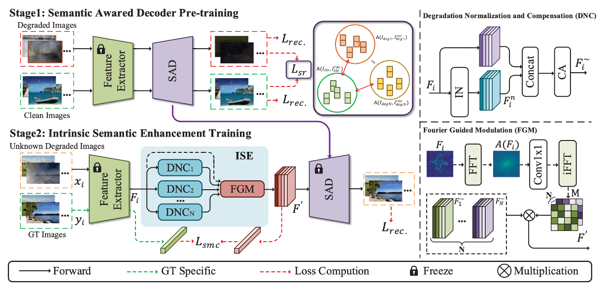
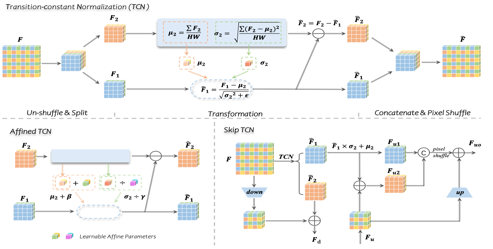
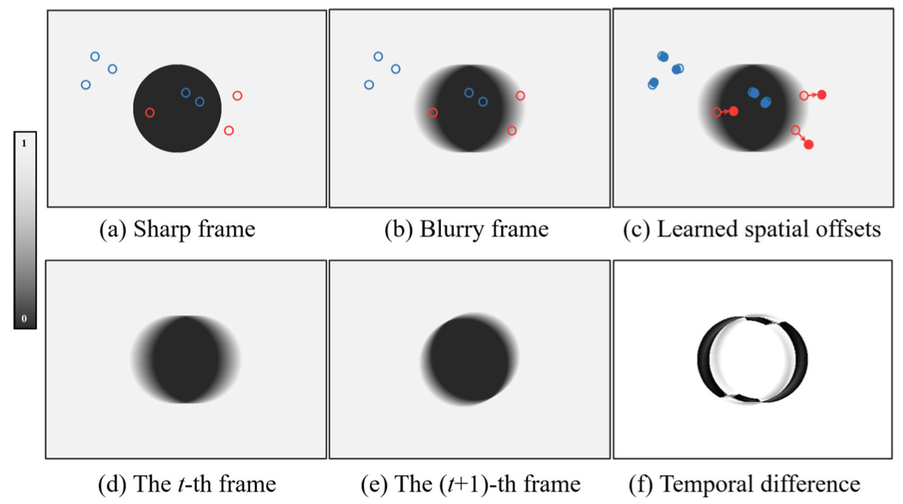
ECCV 2022 (Oral)


Research
Oct. 2025 — Present
Research Intern, JD Explore Academy
Topic: VLM Post-training
Shanghai, China
Nov. 2023 — Aug. 2024
Research Intern, DAMO Academy, Alibaba
Topic: Visual generative models
Hangzhou, China
Recognition
National Scholarship, 2023
Contact